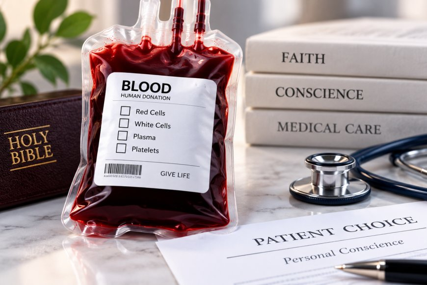

Health · 19 Sep 2026
Jehovah’s Witnesses Announce Adjustments to Blood Transfusion Guidelines

Jehovah's Witnesses have updated their policy regarding blood transfusions, allowing individual members to exercise personal conscience in deciding whether to accept or donate specific components like red cells, white cells, plasma, and platelets.
The Governing Body of Jehovah’s Witnesses has announced a notable adjustment to its blood transfusion policy, allowing individual members to decide whether to accept or donate the four main components of blood based on personal conscience. The policy update was detailed in an official statement issued from the organisation’s World Headquarters in Warwick, New York, and published across multiple media platforms, including The Reporter and Punch Newspapers.
Details of the Policy Update on Blood Components
According to the official announcement, individual members may now freely choose whether to accept red blood cells, white blood cells, plasma, or platelets derived from another person’s blood. Furthermore, individual Witnesses can decide whether to donate blood for the purpose of providing these specific components or fractions for others. However, the organisation emphasised that its foundational religious stance against whole-blood transfusions remains completely unchanged. Rooted in the scriptural command to "abstain from blood" (Acts 15:20), the long-standing refusal of whole-blood transfusions stays in effect as a core teaching.
International spokesman Paul Gillies, speaking from the organisation's World Headquarters, explained that blood continues to be regarded as sacred and as a precious gift from God. Gillies noted that medical choices involving blood components are considered matters of personal conscience between each individual believer and God. The organisation further clarified that because the Bible does not explicitly comment on individual decisions regarding the four primary blood components, those choices now fall strictly under personal conscience.
Context and Medical Care Approach
This latest shift follows earlier policy updates introduced earlier in the year concerning blood fractions and the use of a member’s own blood during surgical and medical procedures. Under those previous guidelines, individual Witnesses were permitted to decide whether their own blood could be withdrawn, stored, and subsequently returned to them during medical treatment, while maintaining the prohibition against receiving whole blood from another individual.
The organisation reiterated that Jehovah’s Witnesses value life and seek out the best available medical care, actively looking for doctors who can provide effective treatments aligned with their personal values and beliefs. The group explicitly noted that they do not practise faith healing.
Local Congregations and Global Reach
To ensure personal autonomy, local congregations will not interfere in the medical choices made by members. Gillies emphasized that local bodies do not involve themselves in decisions that rest with personal conscience, and fellow believers will continue to be supported in their individual choices. He also expressed gratitude toward skilled and compassionate physicians who deliver quality care while respecting these personal wishes.
Representing a global community of over nine million adherents distributed across congregations in more than 200 countries and territories, the organisation continues to balance its core scriptural tenets with evolving guidance on modern medical procedures, as highlighted in comprehensive summaries such as the Evening Recap by Punch.
Sources
This article was produced by the C. O. Eric AI Newsroom from the cited sources. It is published only after automated evidence and safety checks.